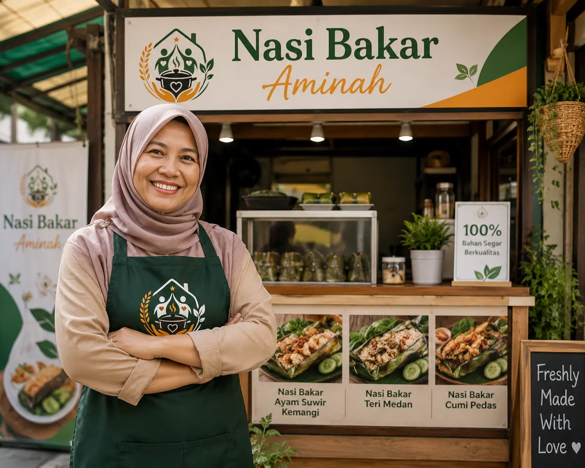

Kuliner
Dari Dapur Sempit Menuju Kemandirian Sekolah Anak
"Dulu saya bingung besok anak-anak bisa makan atau tidak. Sejak bergabung menjadi Mitra Binaan DapurYatimDhuafa, pesanan nasi bakar harian memberikan kepastian untuk masa depan mereka."